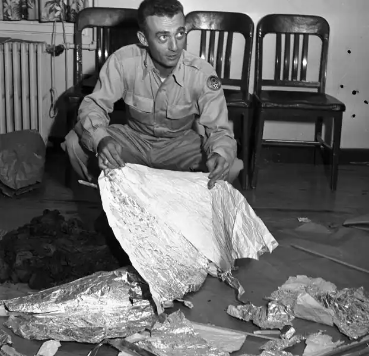

En julio de 1947, en Roswell, Nuevo México, William "Mac" Brazel, un ranchero local, descubrió escombros dispersos en su rancho. Brazel encontró restos de un material que parecía metálico y ligero, junto con vigas de madera y cinta adhesiva. Después de informar a las autoridades locales, el ejército estadounidense de la Base de la Fuerza Aérea de Roswell emitió un comunicado de prensa anunciando el descubrimiento de un "disco volador" estrellado. Sin embargo, el día siguiente, el 8 de julio de 1947, el ejército cambió repentinamente su historia, retractándose del anuncio inicial y afirmando que en realidad era un globo meteorológico del Proyecto Mogul, un programa clasificado de vigilancia de la Unión Soviética. Esta explicación se convirtió en la narrativa oficial durante décadas. El interés en el Incidente de Roswell resurgió en la década de 1970, cuando varios testigos comenzaron a hablar sobre lo que afirmaban haber visto en aquel entonces. Surgieron teorías de conspiración que sugerían que el gobierno estadounidense había encubierto la verdad sobre el incidente, y que el material recuperado no era un globo meteorológico, sino una nave espacial extraterrestre o tecnología avanzada secreta. Los creyentes en la teoría extraterrestre argumentan que los restos recuperados y los testimonios de testigos sugieren una posible actividad extraterrestre, incluidos cuerpos de seres no humanos. Sin embargo, los escépticos sostienen que hay explicaciones terrenales para lo que sucedió en Roswell, como el mencionado Proyecto Mogul o pruebas de armas secretas. A lo largo de los años, el Incidente de Roswell ha generado una gran cantidad de interés público y ha sido objeto de numerosas investigaciones, libros, documentales y películas. Sin embargo, hasta el día de hoy, no hay evidencia concluyente que respalde la teoría extraterrestre, y el gobierno estadounidense mantiene su posición de que el incidente se debió a un error de identificación de un globo meteorológico.
Ver más